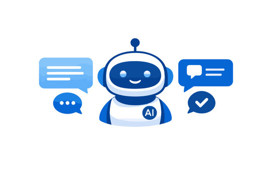
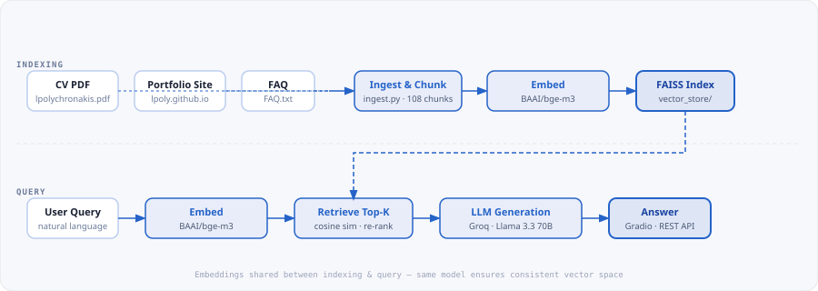

Portfolio Chatbot — RAG Assistant

Brief
A live, deployed AI assistant that answers questions about my background, projects, skills, and CV. It uses retrieval-augmented generation (RAG): rather than relying on a model's training memory, it retrieves the most relevant passages from my actual documents and feeds them to the LLM as context. Ask it anything — it answers from source, not from guesswork.
What It Does
The chatbot is embedded directly on this portfolio and deployed as a public Hugging Face Space. Visitors can ask questions like "What is his latest job?", "What ML frameworks does he know?", or "Tell me about the IGARSS paper" — and get accurate, grounded answers drawn from my CV and website content.
- Answers questions about experience, projects, skills, and education
- Grounds every answer in retrieved source documents — no hallucination
- Maintains short-term conversation memory across follow-up questions
- Falls back gracefully to extractive synthesis when the API is unavailable
Data Sources
Three document collections were ingested and indexed at build time:
- CV PDF — full résumé with experience, education, and skills
- Portfolio website HTML — all project pages from
lpoly.github.io, scraped and parsed - FAQ text file — manually written Q&A pairs covering common recruiter questions
Together these produce 108 chunks across 92 source documents, covering the full breadth of my professional profile.
Pipeline

The pipeline has two phases. At index time, documents are chunked, embedded with BAAI/bge-m3, and stored in a FAISS vector index. At query time, the user's question is embedded with the same model, the closest chunks are retrieved by cosine similarity, re-ranked with a combination of semantic score and lexical overlap, and the top results are passed as context to the LLM.
Stack
- Embedding model:
BAAI/bge-m3— 570M-parameter multilingual model, robust to short and noisy queries - Vector store: FAISS (CPU) — in-memory index, file-backed, sub-millisecond retrieval at this scale
- Retrieval: LangChain FAISS wrapper · cosine similarity · multi-factor re-ranking (semantic + lexical + section bias)
- LLM: Groq API ·
llama-3.3-70b-versatile— fast, free inference; answers grounded in retrieved context only - Frontend: Gradio chat UI deployed to Hugging Face Spaces, with a custom JavaScript widget embedded on this site
- Ingest: custom
ingest.pyscript — parses PDF (PyPDF), crawls HTML (BeautifulSoup), chunks and indexes with metadata